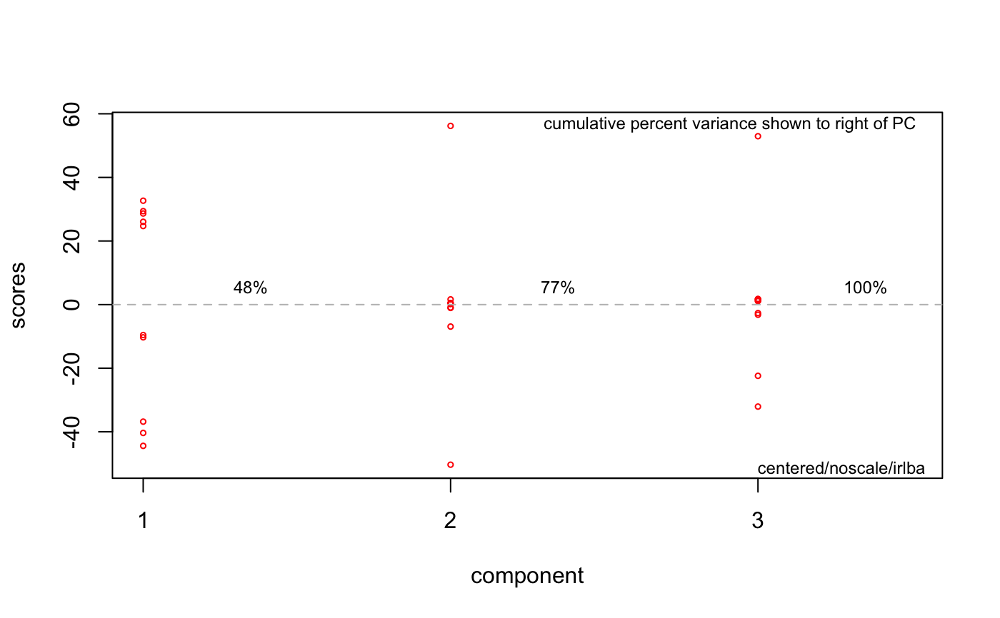

This function unstacks a Spectra2D object and conducts IRLBA
PCA on it.
To unstack, each F1 slice (parallel to F2) is concatenated one after the other
so that each 2D spectrum becomes a 1D spectrum. The length of this spectrum will be
equal to the length of the F2 dimension times the length of the F1 dimension.
PCA is performed on the collection of 1D spectra (one spectrum from each 2D spectrum).
The IRLBA algorithm is used because the resulting matrix (n samples in rows x F1 * F2 columns)
can be very large, and other PCA algorithms can struggle.
popSpectra2D(spectra, n = 3, choice = "noscale", ...)
| spectra | An object of S3 class |
|---|---|
| n | Integer. The number of components desired. |
| choice | A character string indicating the choice of scaling. One of
|
| ... | Other parameters to be passed to |
An object of classes prcomp, pop and computed_via_irlba
modified to include a list element called $method, a character string describing the
pre-processing carried out and the type of PCA performed (used to annotate
plots).
The scale choice autoscale scales the columns by their standard
deviation. Pareto scales by the square root of the standard
deviation. "autoscale" is called "standard normal variate" or "correlation matrix PCA"
in some literature. This action is performed on the unstacked matrix, as will centering.
J. Baglama and L. Reichel, "Augmented Implicitly Restarted Lanczos Bidiagonalization Methods" SIAM J. Sci. Comput. (2005).
For other data reduction methods for Spectra2D objects, see
miaSpectra2D and pfacSpectra2D.
#> Error in "pop" %in% class(so): object 'res' not foundplotScree(res)MUD1a <- plotLoadings2D(MUD1, res, load_lvls = c(-0.2, -0.1, 0.1, 0.2), main = "POP Comp. 1 Loadings")